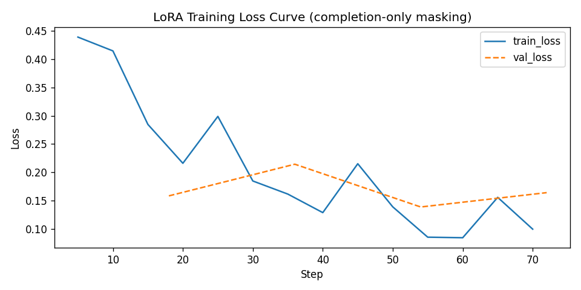

An original dataset of 10-K filings, developer discussion and market data, with a GenAI moat classifier
Daksh Chauhan · Semester VII · Adani University
This slide is motivation, not a result. The project tests these ideas on data.
| Question | Method | |
|---|---|---|
| RQ1 | Can a small open LLM label the moat type in a 10-K paragraph, and does fine-tuning beat prompting? | Qwen2.5-1.5B: zero-shot, few-shot, LoRA, against baselines |
| RQ2 | On Hacker News, do developers argue for building internal tools or buying SaaS? | Zero-shot and few-shot stance classification |
| RQ3 | Do companies with more moat language show better excess returns or revenue growth since 2023? | Spearman rank correlation, sector comparison |
| Source | What | Size |
|---|---|---|
| SEC EDGAR 10-K | Item 1 (Business) and 1A (Risk Factors), split into paragraphs | 464 filings · 190,655 paragraphs |
| SEC XBRL | Annual US-GAAP revenue and growth | 538 company-years |
| Hacker News (Algolia API) | Build-vs-buy and internal-tool discussions, authors hashed | 7,829 items |
| Pricing pages | Live pages and Wayback snapshots (robots.txt respected) | 147 records (descriptive only) |
| Market data | Split-adjusted prices Jan 2023 → Oct 2026, vs IGV software ETF | 96 tickers · IGV +118.3% |
Polite collection: declared user agent, rate limits, robots.txt, no login walls or CAPTCHA bypass. A datasheet and SHA-256 manifest ship with the data.
"None / commodity" means no structural barrier is claimed (generic description, boilerplate risk text).
| Split | Labels by | Notes |
|---|---|---|
| Train (140) | Keyword rules | Used to fine-tune LoRA |
| Validation + test (52 kept, 8 excluded) | Reviewed by an independent LLM (Claude Opus 5.5), approved by the author | Agreement with rule 65% · Cohen's κ = 0.57 |
The reviewer saw the rule's suggestion, so test labels may lean toward the rule (anchoring). Test set: 35 paragraphs.
Taxonomy definitions + paragraph → label.
Same prompt plus 6 labelled training examples (one per class).
4-bit Qwen2.5-1.5B, LoRA on q/k/v/o (r = 8, α = 16), loss on the label tokens only, 4 epochs, lr 2e-4, 140 training paragraphs.
Instead of parsing free text, the model scores each of the 6 label strings and the most likely one wins. Every output is a valid label, and all methods are compared the same way.
Kaggle Tesla T4. Baselines: majority class, random, and the keyword rule itself.
| Method | Acc. | 95% CI | Macro-F1 | 95% CI |
|---|---|---|---|---|
| Majority class | 0.457 | [0.30, 0.62] | 0.105 | [0.07, 0.13] |
| Random | 0.143 | [0.06, 0.29] | 0.122 | [0.03, 0.21] |
| Keyword rule* | 0.657 | [0.49, 0.79] | 0.667 | [0.47, 0.80] |
| Zero-shot (Qwen 1.5B) | 0.371 | [0.23, 0.54] | 0.305 | [0.18, 0.40] |
| Few-shot, 6 examples | 0.343 | [0.21, 0.51] | 0.307 | [0.18, 0.41] |
| LoRA fine-tuned | 0.600 | [0.44, 0.74] | 0.589 | [0.40, 0.75] |
| Class (LoRA) | Precision | Recall | F1 | n |
|---|---|---|---|---|
| System of record | 0.67 | 0.80 | 0.73 | 5 |
| Data gravity | 0.25 | 0.50 | 0.33 | 2 |
| Switching costs / integrations | 0.38 | 1.00 | 0.55 | 3 |
| Compliance & security | 0.50 | 0.67 | 0.57 | 3 |
| Network effects / ecosystem | 0.83 | 0.83 | 0.83 | 6 |
| None / commodity | 0.86 | 0.38 | 0.52 | 16 |
Biggest weakness: "none / commodity" recall 0.38. It is the largest test class (16 of 35), and the model tends to see a moat where the text only describes the business.

VERX FY2025 · 0001104659-26-019165_Item1_17
"Our global compliance and reporting solutions enable the automation of signature-ready returns and remittance of indirect tax to appropriate jurisdictions. Companies use these solutions to leverage tax data files imported from Vertex or third-party applications to establish visible audit trails of …"
Gold: Compliance & security · LoRA: Compliance & security · Few-shot: Data gravity
DOCU FY2022 · 0001261333-22-000049_Item1_59
". Companies can incorporate DocuSign Agreement Cloud into the fabric of their business systems and processes by using one of more than 400 pre-built connectors, or via a custom integration using our API. For a custom integration, the DocuSign Developer Center offers mobile or web app developers …"
Gold: Switching costs / integrations · LoRA: Switching costs / integrations · Few-shot: Data gravity
FLYW FY2022 · 0000950170-23-007149_Item1_320
"clients. The BAAs largely mirror some of the statutory obligations contained in HIPAA, but many contain additional contractual undertakings that give these clients additional remedies in the event of a breach of our obligations to protect the confidentiality of the client’s PHI or otherwise meet …"
Gold: None / commodity · LoRA: Compliance & security · Few-shot: Compliance & security
Quoted verbatim from the test set (truncated). Two cases LoRA gets right and few-shot gets wrong, and one LoRA error.
| Method | Acc. | 95% CI | Macro-F1 |
|---|---|---|---|
| Zero-shot | 0.433 | [0.32, 0.56] | 0.397 |
| Few-shot | 0.433 | [0.32, 0.56] | 0.385 |
| Chance (3 classes) | 0.333 |
Spearman ρ = 0.18 (95% CI [-0.02, 0.37]), p = 0.079, n = 92. With revenue growth: ρ = -0.02, p = 0.84.
| Sector | n | Median return | Median excess vs IGV | Median moat score |
|---|---|---|---|---|
| data/infra | 17 | +160.5% | +42.1% | 0.63 |
| security | 12 | +102.0% | -16.4% | 0.50 |
| communication | 6 | +84.2% | -34.1% | 0.55 |
| horizontal | 25 | +47.3% | -71.0% | 0.47 |
| vertical | 18 | +24.1% | -94.2% | 0.60 |
| fintech/HR | 18 | -12.9% | -131.2% | 0.57 |